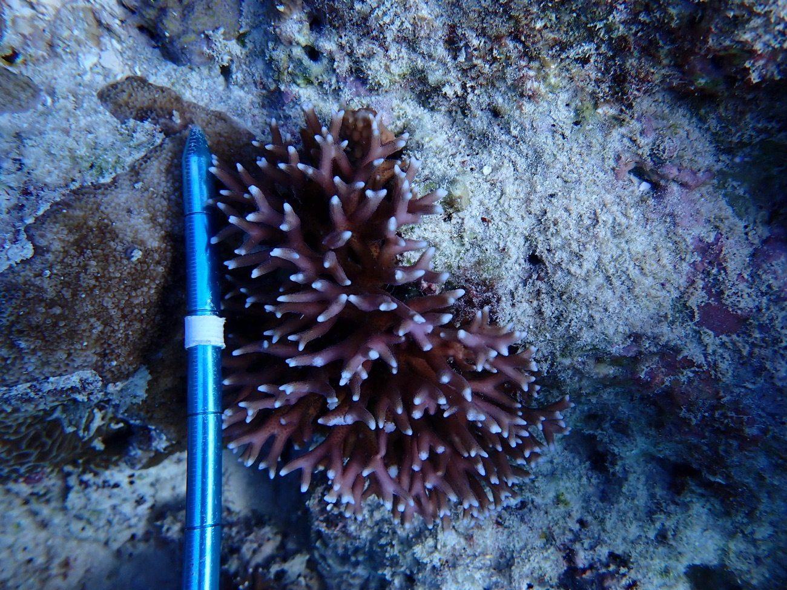
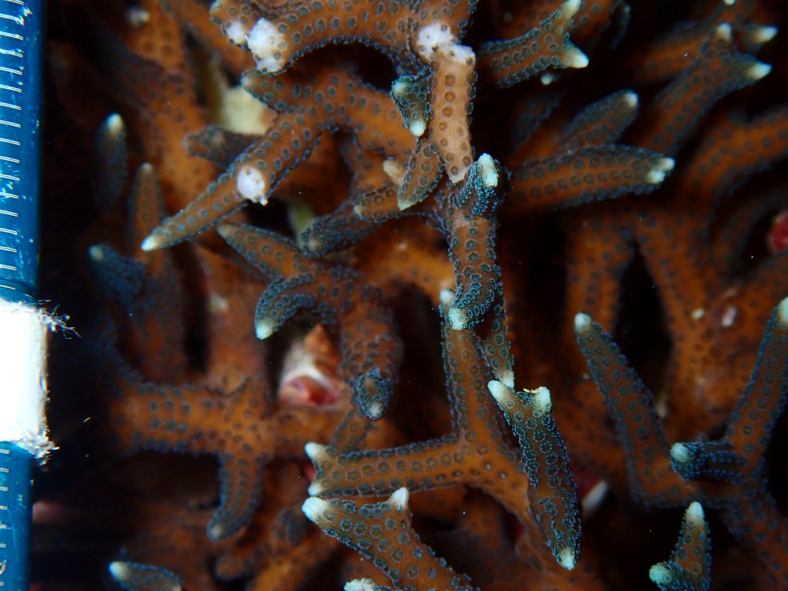
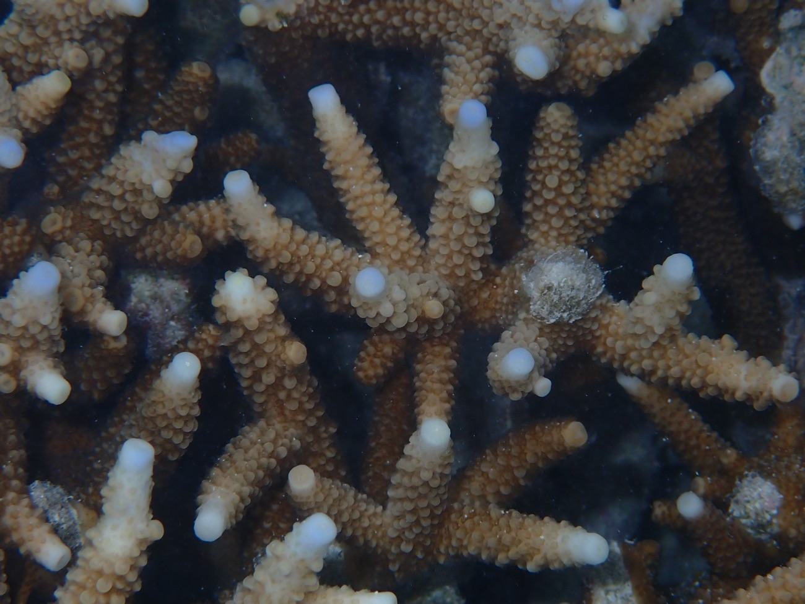

Research
I am interested in how species adapt to their environment, and how they might respond to environmental disturbances e.g., climate change, harvesting, or other anthropogenic pressures.
I would like to develop my skills in quantitative genetics, temporal genomics, and ecophysiology. I am particularly interested in applying genomic tools to the study of endangered species, and to inform sustainable fisheries management. I am also interested in projects aimed at capacity building (in terms of the application of genetics/genomics to conservation) in East Africa. Please reach out if you might have opportunities to collaborate in this space in the future (I will be submitting my PhD in mid-2027)…
Coral population & conservation genomics
My PhD thesis thesis employs population and evolutionary genomics to uncover cryptic diversity in reef corals and to understand the processes that generate and maintain it, including speciation, gene flow, reproductive isolation and local adaptation.
My thesis centres on the brooding coral Seriatopora hystrix along the Great Barrier Reef, where genomic data reveal cryptic species and habitat specialisation: lineages that look alike but are genetically distinct and sorted across reef environments.
Alongside this species-level work I take a macrogenetic view, synthesising and comparing genetic diversity across many coral species and across space to explore what general factors shape diversity on reefs. Related projects include estimates of genetic diversity and differentiation in the Caribbean coral Agaricia tenuifolia, and causal modelling showing that corals in more environmentally heterogeneous reefs can carry lower genetic diversity. Together this work supports efforts such as the Reef Restoration and Adaptation Program to conserve and restore corals in a warming ocean.



Environmental DNA & biodiversity monitoring
Traces of DNA shed into seawater and sediments can reveal the species present on a reef without ever seeing them. I use environmental DNA (eDNA) and DNA metabarcoding to detect and monitor biodiversity, approaches that can make surveys faster, less invasive and more sensitive to hard-to-observe life stages. My Honours research utilised metabarcoding to characterise the spatio-temporal distribution of planktonic echinoderm larvae, and I have since applied eDNA to monitor benthic communities in Quandamooka (Moreton Bay).
I have also contributed to reef community monitoring through Reef Check Australia surveys and the Mooloolaba Ecological Assessment and Mapping project.
Beyond marine systems
While my work so far has focused on marine systems, the genomic and analytical approaches I use apply broadly across taxa, and I am always keen to extend them to new systems, questions and collaborations.
For a full list of talks, posters and publications, see Publications & Talks.